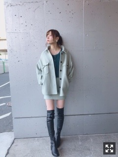
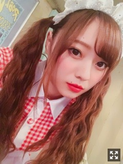
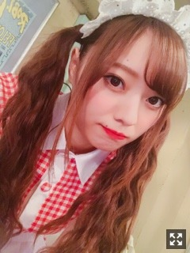
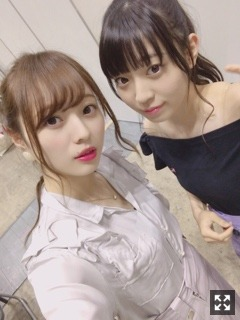
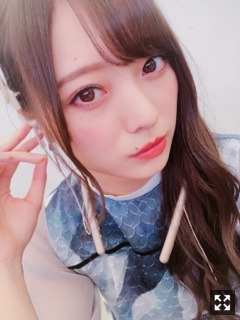

服の整理をしていたら意外と白い服が多かったことに気がつきました〜
みなさまこんにちは！！
乃木坂46 の
梅澤美波です！！！

前にものせたけどちょっと違うの( ¨̮ )
お久しぶりになってしまった、、
すみません(；；)
１１月が始まって
年末に向かって２０１８年が
どんどん進んでいく、、早い、、早すぎる
今年を振り返って写真を見返すと
懐かしいな〜と思うものがいっぱいで
戻りたいと思える瞬間がたくさんあります☺︎
楽しいを更新し続けたいですね( ¨̮ )
そして買い物行きたい欲がすごい！！
寒くなってきたから
ニットも欲しいし
コートも欲しいし
コスメもほしい、、！！！
皆様冬服はもう買いましたか〜？
どんなお洋服好きですか？( .. )
皆様にご報告を！！
ニッポン放送さんの
「乃木坂46梅澤美波の『のぎぼき』！」にて
レギュラーラジオパーソナリティを
担当させて頂くことになりました！
高校の時簿記の授業があって
勉強をしていたんです！
なのでお話を聞いた時は
すごく嬉しかったです！！(；；)
高校時代をすごく思い出します☺︎
ラジオを通して、
また新たにリスナーの皆様と簿記を学んで
この番組を盛り上げていけたらなと思います！！
澤照人先生とご一緒させて頂きます！
澤先生から簿記の本も頂いたので
私も勉強してこのラジオに挑みたいと思います！
月曜〜木曜日、ニッポン放送の
夜のワイド番組
「オールナイトニッポンPremium」内に
ミニ番組としての出演になります( ¨̮ )
ぜひお聞きください！
そしてそして〜
個人PVの予告映像が公開されました！
今回は『AMERICAN DIENER』がテーマで
コメディな感じの個人PVになっております！

監督さんからの指定で
かなり高めのツインに真っ赤のリップ、、
すごく恥ずかしかったけど
撮影も終始楽しくて仕方がなくて、、
笑いっぱなしでした( ¨̮ )（笑）

歌も歌わせて頂いております！
耳に残る〜〜素敵な曲です( ¨̮ )
ぜひ楽しみに待っていただけたら
嬉しいです！！
お命ちょうダイナー！！！
たまみに会ってなさすぎて
会いたくなります〜〜
焼肉行きたいな〜
たまみ〜

お誕生日おめでとう
だいすきだよ〜〜
タコパする約束したから
たのしみっ
さてさて、舞台「ザンビ」！
本番まで１週間切りました！！
お稽古も今日が最後でした！！
HPにてポスタービジュアル、
そして役名も発表されました！
私は一ノ瀬杏奈役を務めさせていただきます！
山下とダブルキャストです( ¨̮ )
意外だったのではないかな〜☺︎
毎日があっという間すぎて驚いています、、
通し稽古もして、完成に近づいていて、
あとは役をお芝居を深める作業、、
一番苦しい時期に突入していますが
毎日台本と睨めっこして
頭をフル回転しております！！
ストーリーが物凄く素敵なんです。
通し稽古見る度に涙しています（笑）
もちろん！
観に来て下さる方が驚くような場面も
沢山あるかと思います、、
早くお見せしたくてそわそわします( ¨̮ )
大好きで大好きで仕方が無いです( .. )
みんなで頑張ります！！
皆様の心に残る、
一ノ瀬杏奈を演じられるよう頑張ります！
お芝居って難しいなあ〜
でも、頭を使う分とても楽しい！
スタッフの皆様に支えられ、
他のキャストの皆様や
アンサンブルの皆様から
学ぶことや教わることが沢山あるから
毎日頭も嬉しい悲鳴をあげています！
起こし下さる方はお楽しみに！
お知らせ◎
《雑誌》
▽日経エンタテインメント！ さま 連載
▽１１／２４ B.L.T.さま 表紙
▽１１／３０ BUBKA さま
りりあと取材して頂きました！久しぶりのこのコンビ！！ぜひチェックしてください〜！
《舞台》
▽１１／１６〜 舞台「ザンビ」
《TV》
▽１１／９ 「ミュージックステーション」
出演させて頂きました！
過ぎてしまってごめんなさい(；；)
乃木坂46がトップバッターの披露で初披露ということもあり、緊張でガクガクでしたが楽しんでパフォーマンスすることが出来ました！
歌う度にうるうるします。
ご覧いただけましたか？
▽１１／１０ 24:58〜
TBS 「COUNT DOWN TV」
こちらも昨日放送されました！
テレビの前で見られました☺︎
▽１１／１３ 19:30〜
NHK 「うたコン」
▽１１／１３ 23:59〜24:54 「ウチのガヤがすみません！」
ずっと見ていた大好きな番組に出演させて頂きます！！収録もひたすら笑いっぱなしでした、、ぜひご覧下さい！
▽１１／１６ 24:59〜
日本テレビ 「バズリズム02」
▽１１／１７ 18:00〜
フジテレビ 「MUSIC FAIR」
▽１２／２ 24:05〜
NHK 「シブヤノオト」
歌番組にたくさん！出演させて頂きます！
大好きな楽曲、
色んな想いが込められているこの楽曲、
歌う度に心にくるものがあります。
当たり前と思わず
ひとつひとつ、毎日を大切に
頑張ります！！
逃さずチェックしてみて下さい( ¨̮ )
《ラジオ》
▽毎週月曜〜木曜 「乃木坂46梅澤美波の『のぎぼき』！」
▽１１／１４ ニッポン放送 25:00〜27:00
乃木坂46のオールナイトニッポン
山下と私で出演させて頂きます！！
２２枚目シングル、
「帰り道は遠回りしたくなる」発売日！
とても光栄です。
楽曲の良さを２人で最大限に
皆様にお届けできればと思っています！
舞台「ザンビ」のコンビでもあり
公演の直前なので
ザンビについても話したりしちゃうかも！！
ぜひお聴き下さい！
そんなこんなで
今日は朝から電車で目の前に座っていた
男の子が本当に可愛くて
癒され、一日頑張れましたっ∠( ˙-˙ )／
肩こりがひどいので
帰って揉みほぐしたいと思います
そしてお腹がすきました〜
何食べよかな〜

最近はこの髪型ばかり。
後ろの髪飾りがとても素敵なんです！！
見てみてください〜〜( ¨̮ )
それでは！
また更新します！
クリスマスソングが聴こえたり
綺麗な飾りつけを見たり
クリスマスを感じるとそわそわします
大好きな冬がやってきます☺︎
Original：https://www.nogizaka46.com/s/n46/diary/detail/47737?ima=4947&cd=MEMBER